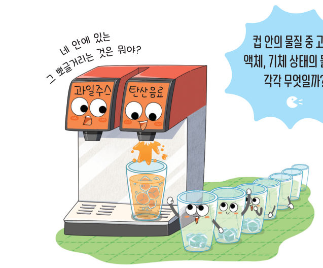
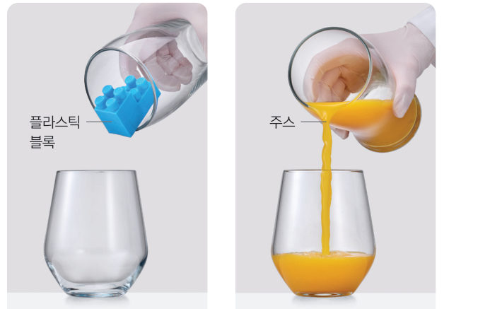
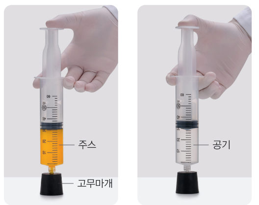
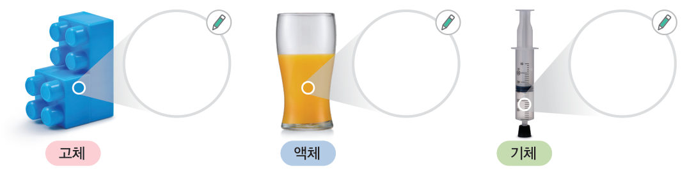
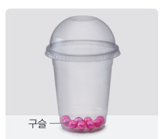
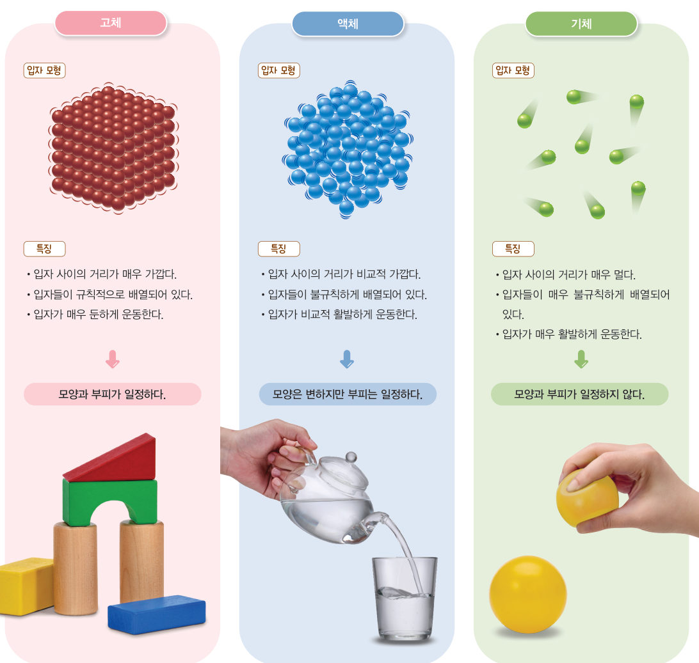
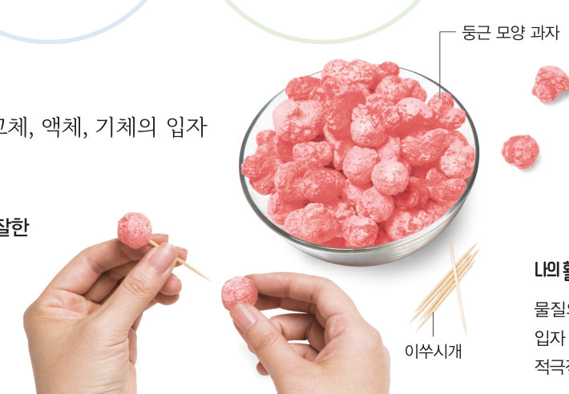

살아있는 교과서 · Ⅳ. 물질의 상태 변화 · 2. 물질의 상태와 상태 변화 · 01 121~125쪽
물질의
물질의
세 가지 상태
“네 안에 있는 그 뽀글거리는 것은 뭐야?” 컵 안의 물질 중 고체, 액체, 기체 상태의 물질은 각각 무엇일까? 가상 컵과 주사기로 세 가지 상태의 특징을 확인하고, 3D 입자 상자로 그 까닭을 찾아보자.
🎯 이 단원을 배우면 — 물질의 세 가지 상태의 특징을 설명하고, 입자 모형으로 표현할 수 있다.
중단원 열기두 번째 블록 질문 121쪽
햇빛이 비추자 젖은 흙이 말랐어. 두 항아리 사이에 넣어 둔 젖은 흙도 시간이 지남에 따라 서서히 말라.
두 번째 블록
젖은 흙이 마를 때는 어떤 상태 변화가 일어날까?
‘물질의 세 가지 상태’(122쪽), ‘물질의 상태 변화’(126쪽), ‘상태 변화와 입자 배열의 변화’(130쪽)의 블록을 모아요. 🧩
✓이미 알고 있는 것 — 물질은 고체, 액체, 의 세 가지 상태로 존재한다. 고체와 액체는 이/가 일정하다.
탐구물질의 세 가지 상태의 특징 알아보기 122~123쪽
물질의 상태에 따라 어떤 특징이 있을까?
우리 주위에는 다양한 물질이 있으며 이들의 상태는 고체, 액체, 기체로 구분할 수 있다. 플라스틱과 얼음은 고체이고, 주스와 물은 액체이며, 공기와 수증기는 기체이다.


가상 실험 1모양이 다른 그릇에 옮겨 담기
세 물질을 모양이 다른 그릇으로 옮겨 보자. 기체(공기)는 눈에 보이지 않으므로 색깔 점으로 나타냈어요. 그릇마다 모양과 부피가 어떻게 되는지 비교하자.
1컵의 모양에 따라 플라스틱 블록의 모양은 , 주스의 모양은 .
가상 실험 2주사기 피스톤 누르기
두 주사기의 끝을 고무마개로 막았어요. 누르는 힘을 키우며 피스톤이 얼마나 들어가는지 비교하자. 아래쪽에 입자 확대 창이 있어요.
🧃 주스의 부피10.0 mL
💨 공기의 부피10.0 mL
2피스톤이 더 많이 눌리는 것은 이다. 기체는 담는 그릇(주사기 안 공간)에 따라 부피가 .
정리해 볼까세 가지 상태의 특징 표 123쪽
1실험 결과로 알 수 있는 세 가지 상태의 특징을 골라 표를 완성하자.
| 모양 | 부피 | |
|---|---|---|
| 고체 | ||
| 액체 | ||
| 기체 |
2추론 · 결론 도출 물질의 세 가지 상태의 특징과 물질을 구성하는 입자의 배열은 어떤 관계가 있을지 이야기해 보자.

다르게 해 보기 · 물질의 상태에 따른 특징 표현하기

투명한 용기와 여러 개의 구슬을 이용하여 물질의 상태에 따른 특징을 표현한다. 구슬이 물질을 구성하는 입자라면 물질의 상태와 입자 배열은 어떤 관계가 있는지 이야기해 보자.
👉 아래 3D 입자 상자에서 같은 활동을 해 볼 수 있어요.
👉 아래 3D 입자 상자에서 같은 활동을 해 볼 수 있어요.
교과서입자 모형과 세 가지 상태 123~124쪽
고체는 담는 그릇이 달라져도 모양과 부피가 변하지 않는다. 액체는 담는 그릇에 따라 모양이 변하지만 부피는 변하지 않는다. 또 기체는 담는 그릇에 따라 모양과 부피가 변한다. 이와 같이 세 가지 상태의 특징이 다른 까닭은 물질의 상태에 따라 입자 사이의 상대적 거리, 입자 배열의 불규칙한 정도, 입자의 운동성 등이 다르기 때문이다.
물질을 구성하는 입자는 눈으로 볼 수 없기 때문에 모형을 이용하여 나타내면 편리하다. 물질을 구성하는 입자를 모형으로 나타낸 것을 입자 모형이라고 한다. 그림 4-5는 물질의 상태에 따른 입자 모형과 특징을 나타낸 것이다.

3D 움직이는 교과서그림 4-5를 3D로 — 입자 상자
버튼을 눌러 같은 입자 64개가 고체·액체·기체일 때 어떻게 배열되고 움직이는지 보자. 드래그하면 상자가 돌아가요. (상태가 바뀌는 과정은 다음 시간에 배워요!)
고체
1입자 배열이 불규칙한 순서대로 나열해 보자. (끌어서 옮기기)
- 고체
- 기체
- 액체
해 보기물질의 세 가지 상태의 특징을 입자 모형으로 표현하기 125쪽

- 모둠별로 준비물을 이용하여 물질의 세 가지 상태의 특징을 입자 모형으로 표현할 수 있는 방법을 토의한다.
- 과정 1에서 토의한 결과를 바탕으로 고체, 액체, 기체의 입자 모형을 만든다.
1🧑🤝🧑 우리 모둠이 만든 고체·액체·기체 모형을 설명하고, 잘한 점과 보완할 점을 써 보자.
스스로 확인하기122쪽 학습 목표를 달성했는지 확인해 보자 125쪽
1개념 확인 물질의 세 가지 상태 중 입자 사이의 거리가 가장 멀고 입자가 가장 활발하게 운동하는 상태는 ( )이다.
2사고력 수업 시간, 쉬는 시간, 하교 시간에 학생들의 모습을 각각 물질의 세 가지 상태에 비유하고 그 까닭을 설명해 보자.
🧩 두 번째 블록 · 힌트 조각 1 (125쪽)
물질의 세 가지 상태 중 물은 ( )이다.
5분 테스트물질의 세 가지 상태
1옳은 것은 O, 옳지 않은 것은 X를 골라 보자.
| ① 공기와 수증기는 액체이다. | |
| ② 물질은 상태에 따라 고체, 액체, 기체로 구분할 수 있다. | |
| ③ 상태에 따라 입자 사이의 상대적 거리, 입자 배열의 불규칙한 정도, 입자의 운동성이 다르기 때문에 상태에 따라 물질의 특징이 다르게 나타난다. |
2세 가지 상태와 특징을 연결해 보자.
㉠ 담는 그릇이 달라져도 모양과 부피가 변하지 않는다. ㉡ 담는 그릇에 따라 모양과 부피가 변한다. ㉢ 담는 그릇에 따라 모양이 변하지만 부피는 변하지 않는다.
고체 → 액체 → 기체 →
㉠ 담는 그릇이 달라져도 모양과 부피가 변하지 않는다. ㉡ 담는 그릇에 따라 모양과 부피가 변한다. ㉢ 담는 그릇에 따라 모양이 변하지만 부피는 변하지 않는다.
고체 → 액체 → 기체 →
3고체 상태는 입자들이 배열되어 있다. 액체는 고체 상태의 물질보다 입자가 배열되어 있어 흐르는 성질이 있다. 입자 사이의 거리가 가장 가까운 상태는 이고, 는 입자 사이의 거리가 매우 멀어서 입자의 운동이 매우 자유롭고 활발하다.
스스로 정리하기물질의 세 가지 상태 134쪽
1물질의 세 가지 상태
물질의 상태에 따라 입자 사이의 상대적 거리, 입자 의 불규칙한 정도, 입자의 운동성 등이 다르기 때문에 세 가지 상태의 특징이 다르다.
| 구분 | 고체 | 액체 | 기체 |
|---|---|---|---|
| 입자 사이의 거리 | 매우 가깝다. | 비교적 가깝다. | 매우 . |
| 불규칙한 정도 | 규칙적이다. | 불규칙하다. | 매우 불규칙하다. |
| 입자의 운동성 | 매우 둔하게 운동한다. | 비교적 활발하게 운동한다. | 매우 활발하게 운동한다. |
제출학생 정보 · 제출하기
모든 활동을 마친 뒤 제출하면 전체가 한 번에 채점되고 피드백이 나타나요. 답안은 선생님 스프레드시트(중1 탭)에 기록돼요.